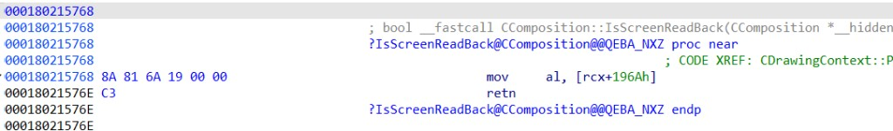

Hidden windows & anti-capture seriesTools: IDA · Cheat Engine · Hawkeye Community
1. TL;DR & scope
A normal BitBlt screenshot enters the kernel, then continues into DWM’s
dwmcore!CaptureBitsResponse::RenderForCapture path.
During capture, DWM sets a readback flag at
g_pComposition+0x196A (CComposition::IsScreenReadBack on
Win11-class builds). DrawVisualTree consults that flag when deciding whether
content protected by
part 1 (DisplayAffinity) and
part 2 (Visual hiding) should appear in the
output.
If the write of 1 is suppressed for one capture frame, BitBlt can return
pixels that bypass both protection mechanisms — the “super screenshot”
behavior described here.
Test environment: Windows 11 x64, build 26100 (figures below).
The capture-path semantics apply to Windows 10 and Windows 11;
the patch site encoding and +0x196A offset vary by build — locate
RenderForCapture from dwmcore.dll symbols (PDB) and scan for
the store pattern rather than hard-coding bytes.
Hawkeye Community ships !screensnap, which automates pattern discovery,
temporary patching, BitBlt capture, and restore.
Scope: reverse-engineering notes on why window-level anti-capture can fail
under BitBlt readback manipulation, and what that implies for defenders; not a cheat or
evasion guide.
2. Background & series
This series has three parts. This article is part 3:
Part 1: SetWindowDisplayAffinity — mechanism & detection
Part 2: Visual-layer hiding — mechanism & detection
Parts 1 and 2 documented defender-side detection surfaces in dwm.exe.
This part closes the loop: it explains the DWM capture path and why
BitBlt readback semantics can bypass both protection styles if an attacker briefly
suppresses the readback flag during RenderForCapture.
Understanding that gap matters for anti-cheat and forensics teams who treat
DisplayAffinity alone as sufficient protection.
Like DisplayAffinity, a BitBlt call enters the kernel first, then sends an
LPC message to dwm.exe. Execution lands in
dwmcore!CaptureBitsResponse::RenderForCapture, then returns through the
same path.
A BitBlt screenshot is therefore not decided in the kernel — composition and
protection outcomes depend on DWM, primarily dwmcore.dll.
4. Display vs Capture
Analysis shows that Display and Capture use separate RenderTargets but one shared pipeline:
different surfaces, same global Visual tree and composition logic.
The whole capture frame is wrapped by this write/clear pair.
Cross-check: IsScreenReadBack
A global IDA search for 196Ah leads to readback-related code; on Win11-class
builds the PDB names it CComposition::IsScreenReadBack:

Figure 3. CComposition::IsScreenReadBack — load [rcx+196Ah] and return; i.e. test the readback / capture semantic flag.
In practice, the helper answers “are we in readback/capture state right now?”
The symbol is often missing on Win10; resolve the field offset from instruction patterns
on the target build instead.
6. Validation
Static analysis only goes so far. The decisive test is in a running
dwm.exe: at the site marked in Figure 1, change the write from
1 to 0 and observe whether a normal BitBlt still captures
protected windows.
Attach to dwm.exe and patch the Figure 1 site — one byte,
changing the immediate in mov r15d, 1 from 01 to 00
(the figure below was taken with Hawkeye Lab memory editing; the same workflow is
automated in Community via !screensnap):
Trigger a normal BitBlt capture afterward — windows and Visuals protected under
parts 1 and 2 appear in the screenshot.
Side effect worth noting
Under normal conditions the flag only lives for one capture frame:
RenderForCapture sets g_pComposition + 0x196A to 1
before drawing, then clears it to 0 when the frame ends.
The inverse experiment is more surprising: leave the capture code alone, but pin that byte
to 1 in memory so DWM stays in readback semantics. Protected windows
disappear from the live desktop — not transparency, but the Display
path skipping protected content because DrawVisualTree reads the same flag.
Trigger another capture and let the normal set/clear cycle run; desktop behavior returns.
Repeatable workflow (research reproduction)
The one-byte patch proves the idea; a reproducible workflow patches the readback writer in
dwm.exe remotely before the BitBlt call so
g_pComposition + 0x196A stays 0 for that capture frame, then
restores the original bytes after BitBlt returns. No injection into dwm.exe,
no hooks — only a very short-lived code patch.
Locate the patch site. In dwmcore.dll’s RenderForCapture, find the store to [g_pComposition+196Ah]. On build 26100 it is mov [rax+196Ah], r15b (Figure 1, preceded by mov r15d, 1). Encoding varies by build; scan for the pattern instead of hard-coding an absolute address.
Rewrite the instruction. Turn the “write 1” into “write 0”. Either change the store to mov [rax+196Ah], 0, or flip the immediate in mov r15d, 1 (01 → 00).
Take a normal screenshot. Call BitBlt on the primary display.
Restore the patch. Write the original bytes back immediately.
This bypasses both part 1 (DisplayAffinity) and part 2 (Visual hiding) because
capture-path protection is gated on readback semantics, not on the protection bits alone.
7. Reference implementation (Hawkeye Community)
The research workflow in this article is implemented in Hawkeye Community as
!screensnap. It resolves RenderForCapture from
dwmcore.dll symbols, scans the function for the readback store pattern,
applies a temporary patch (mov byte ptr [rax+disp32], 0), captures the
primary display via BitBlt, then restores the original bytes. Output PNGs land under the
application screensnap/ folder.
Use part 1’s !hidden_windows (run !hidden_windows -init
first) to confirm protected windows exist,
then run !screensnap to reproduce the readback suppression behavior described
above. Validated on most Windows 10 and 11 systems we tested
— not every build or configuration. Patch-site discovery is pattern-based rather than
hard-coded to build 26100.